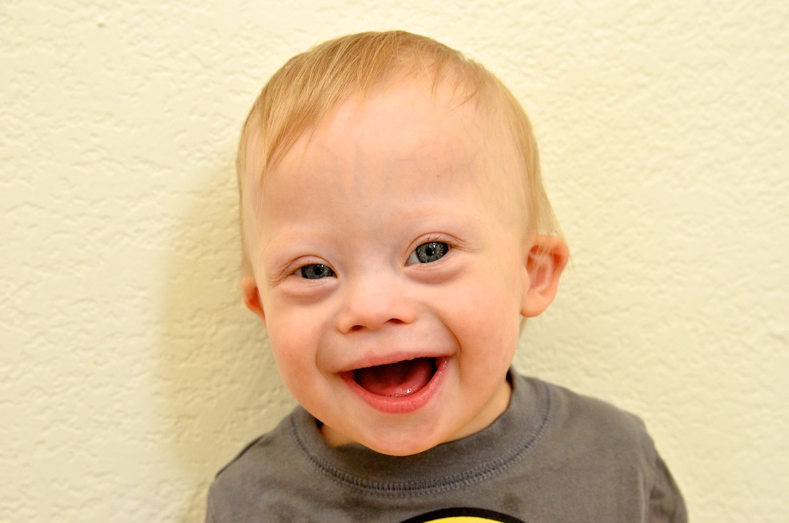

Congenital
These are conditions that are present at birth. These conditions may be either hereditary or due to an influence occuring during gestation up to the moment of birth.
Congenital Heart Disease
The causes of congenital heart disease are unknown, though it is thought that genetics, medications and viral infections all play a part. People with a congenital heart disease either have a weak heart due to abnormal heart muscles, heart valve defects which impedes the forward blood flow or hole in the artia and ventricles of the heart allowing oxygenated and unoxygenated blood to mix. It is thought that approximatelt 1 in 100 children are affected by congenital heart disease.
Autism
In essence, Autism affects how the brain processes information by altering how nerve cells (and their synapses) connect and organise. The results include impaired social interactions and communications (both verbal and non-verbal) as well as repetitive behaviour. Whilst not much is known about the causes of autism, we know it is a neural development disorder with a very broad range of conditions and seriousness. The estimate for Autism is about 15.7 per 1,000 only approx 2 people per thousand present severe cases of Autism.
Cerebral Palsy (CP)

Cerebral palsy is a neurological disease that results in physical problems. Sufferers from Cerabral palsy primarily lack fine motor skills, though propblems with sensation, depth perception and communication also frequently occur. Currently, this neurological disease occurs in about 2.1 per 1,000 live births.
Down Syndrome

Down syndrome is the most common genetic disorder caused by the presense of Chromosome 21. The effects and severity of down syndrome vary greatly but it is typically associated with growth delays, distinct facial features and intellectual disability. Currently, about 1 in a 1,000 babies born each year have down syndrome.
Spina Bifida

In essence, Spina bifida is the formation of a cist on the spinal cord. This cist translates to a malformation which effects how the feutus forms. The extent of spinal bifida varies depending on the location of this cist. In general, spins bifida may result in leg weakness, orthopedic abnormalities, pressure sores or even abnormal eye movements. This congenital disoreder occurs in about 1 pers 1,000 births worldwide, making it one of the most common birth defects.
Aquired
These are conditions which are caused by reaction to environmental influences.
Asthma
Asthma is a very common chronic inflammarity disease that ranges from mild to severe. Asthma typically causes airflow obstruction resulting in coughing, wheexing, a tight feeling in the chest, shortness of breath or even sleeping discomforts from coughing/wheezing. Asthma can be an intermitted disease or it may be a lifelong problem. Some causes of asthma include excercise, allergies, cold and infections and passive smoking. Asthma is found in approximately 20% of the population.
Passive smoking
2nd hand and thrid hand smoking
Eczema and Psoriasas
eczema is related to asthma, whilest psoriasas incresed the risk of heart disease. Atopy is when someone contracts Ecxema Psoriasas and asthma.
Juvenile rheumatoid arthritis
Inflammed joints, causeing pain when moving.
Remember to input some psychological issues as well.